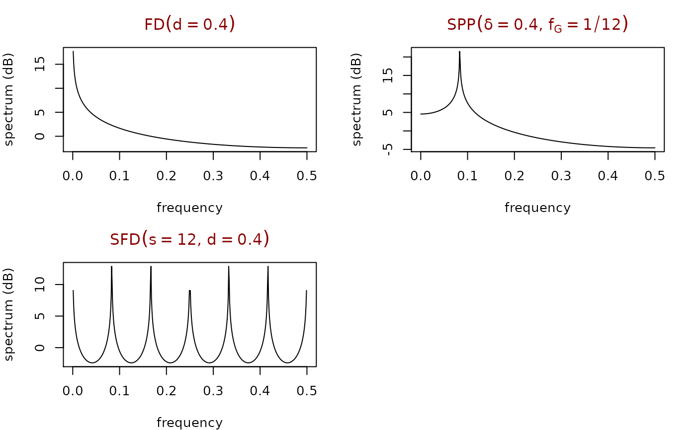

sdf.RdDraws the spectral density functions (SDFs) for standard long-memory processes including fractional difference (FD), seasonal persistent (SP), and seasonal fractional difference (SFD) processes.
fdp.sdf(freq, d, sigma2 = 1)
spp.sdf(freq, d, fG, sigma2 = 1)
spp2.sdf(freq, d1, f1, d2, f2, sigma2 = 1)
sfd.sdf(freq, s, d, sigma2 = 1)| freq | vector of frequencies, normally from 0 to 0.5 |
|---|---|
| d,d1,d2 | fractional difference parameter |
| fG,f1,f2 | Gegenbauer frequency |
| s | seasonal parameter |
| sigma2 | innovations variance |
The power spectrum from an FD, SP or SFD process.
Brandon Whitcher
dB <- function(x) 10 * log10(x)
fdp.main <- expression(paste("FD", group("(",d==0.4,")")))
sfd.main <- expression(paste("SFD", group("(",list(s==12, d==0.4),")")))
spp.main <- expression(paste("SPP",
group("(",list(delta==0.4, f[G]==1/12),")")))
freq <- 0:512/1024
par(mfrow=c(2,2), mar=c(5-1,4,4-1,2), col.main="darkred")
plot(freq, dB(fdp.sdf(freq, .4)), type="l", xlab="frequency",
ylab="spectrum (dB)", main=fdp.main)
plot(freq, dB(spp.sdf(freq, .4, 1/12)), type="l", xlab="frequency",
ylab="spectrum (dB)", font.main=1, main=spp.main)
plot(freq, dB(sfd.sdf(freq, 12, .4)), type="l", xlab="frequency",
ylab="spectrum (dB)", main=sfd.main)
